주요 인물·기업
 참가업체 추천 | Shanghai Aoerte는 제28회 하이테크 박람회에서 특허받은 냉각수 제품과 솔루션을 선보일 예정입니다.2026-11-23Shanghai Aoerte Coolant Technology Co., Ltd.는 액체 냉각 분야에 중점을 두고 데이터 센터, 자동차 및 에너지 저장 액체 냉각 시스템을 위한 제품과 솔루션을 제공합니다. 이번 전시회에서는 Aote의 특허받은 냉각수 제품과 솔루션을 멋진 외관으로 선보일 예정입니다(부스 번호: 6-A2).
참가업체 추천 | Shanghai Aoerte는 제28회 하이테크 박람회에서 특허받은 냉각수 제품과 솔루션을 선보일 예정입니다.2026-11-23Shanghai Aoerte Coolant Technology Co., Ltd.는 액체 냉각 분야에 중점을 두고 데이터 센터, 자동차 및 에너지 저장 액체 냉각 시스템을 위한 제품과 솔루션을 제공합니다. 이번 전시회에서는 Aote의 특허받은 냉각수 제품과 솔루션을 멋진 외관으로 선보일 예정입니다(부스 번호: 6-A2).
 정밀 도구를 통한 스마트 제조 역량 강화 | BAKON White Light & United Clean Industry, 제28회 하이테크 박람회에 데뷔2026-11-222026년 11월 26일부터 28일까지 제28회 중국국제첨단기술박람회(이하 하이테크박람회)가 심천국제전시센터(바오안)에서 개최됐다. BAKON White Light - 중국 전자제품 제조 풀링크 보증 전문가, "전자제품 제조 풀링크" 개척
정밀 도구를 통한 스마트 제조 역량 강화 | BAKON White Light & United Clean Industry, 제28회 하이테크 박람회에 데뷔2026-11-222026년 11월 26일부터 28일까지 제28회 중국국제첨단기술박람회(이하 하이테크박람회)가 심천국제전시센터(바오안)에서 개최됐다. BAKON White Light - 중국 전자제품 제조 풀링크 보증 전문가, "전자제품 제조 풀링크" 개척
 기술 중심 | Guangdong Zhongzhi Testing Instruments는 데스크탑 수준의 환경 테스트 솔루션으로 제28회 하이테크 박람회에서 데뷔했습니다.2026-11-21Guangdong Zhongzhi Testing Instrument Co., Ltd.는 전시회 기간 동안 20L 데스크톱 고온 및 저온 테스트 챔버부터 1,200m3 이상의 차량용 대형 환경 챔버까지 본격적인 환경 테스트 솔루션을 전시하여 R&D 스테이션에서 우주 환경까지의 검증 링크를 제시할 예정입니다.
기술 중심 | Guangdong Zhongzhi Testing Instruments는 데스크탑 수준의 환경 테스트 솔루션으로 제28회 하이테크 박람회에서 데뷔했습니다.2026-11-21Guangdong Zhongzhi Testing Instrument Co., Ltd.는 전시회 기간 동안 20L 데스크톱 고온 및 저온 테스트 챔버부터 1,200m3 이상의 차량용 대형 환경 챔버까지 본격적인 환경 테스트 솔루션을 전시하여 R&D 스테이션에서 우주 환경까지의 검증 링크를 제시할 예정입니다.
 Houpu Technology는 다양한 혁신 성과를 바탕으로 제28회 하이테크 박람회에서 데뷔했습니다!2026-11-21Houpu Clean Energy (Group) Co., Ltd.(주식 코드: 300471)는 자회사 Houpu Engineering, Houpu Hydrogen Energy, Chengdu Hydrogen Collection, Houpu Equipment, Houpu International, Houpu Low Temp, Houpu Zhilian 및 Anderson과 함께 중국 하이테크 박람회의 수소 에너지 전시장에서 성대하게 모습을 드러낼 예정입니다.
Houpu Technology는 다양한 혁신 성과를 바탕으로 제28회 하이테크 박람회에서 데뷔했습니다!2026-11-21Houpu Clean Energy (Group) Co., Ltd.(주식 코드: 300471)는 자회사 Houpu Engineering, Houpu Hydrogen Energy, Chengdu Hydrogen Collection, Houpu Equipment, Houpu International, Houpu Low Temp, Houpu Zhilian 및 Anderson과 함께 중국 하이테크 박람회의 수소 에너지 전시장에서 성대하게 모습을 드러낼 예정입니다.
 춘절 갈라 로봇부터 하이테크 박람회까지: 바이두 마케팅, AI 산업의 새로운 성장 경로를 해독하는 백서 발표2026-11-20이 열기는 곧 스크린에서 부스로 옮겨갈 것입니다. 제28회 중국국제첨단기술박람회(이하 하이테크박람회)가 11월 26일부터 28일까지 선전국제전시센터(바오안)에서 개최된다. 그때쯤이면 바이두 마케팅은 '검색 +
춘절 갈라 로봇부터 하이테크 박람회까지: 바이두 마케팅, AI 산업의 새로운 성장 경로를 해독하는 백서 발표2026-11-20이 열기는 곧 스크린에서 부스로 옮겨갈 것입니다. 제28회 중국국제첨단기술박람회(이하 하이테크박람회)가 11월 26일부터 28일까지 선전국제전시센터(바오안)에서 개최된다. 그때쯤이면 바이두 마케팅은 '검색 +
 효율적인 온도 제어에 집중: 제28회 중국 하이테크 박람회에서 공개된 Midea의 풀 스택 빌딩 기술 솔루션2026-11-20Midea Building Technology는 Midea Group의 7대 주요 사업 부문 중 하나입니다. 이전에는 중앙 에어컨 사업부였으며 1999년에 공식적으로 설립되었습니다. 제품, 서비스 및 관련 산업을 구축하는 데 중점을 두고 있습니다. 핵심 사업에는 HVAC, 엘리베이터, AIDC, 에너지 저장 및 에너지 관리가 포함됩니다. ~처럼
효율적인 온도 제어에 집중: 제28회 중국 하이테크 박람회에서 공개된 Midea의 풀 스택 빌딩 기술 솔루션2026-11-20Midea Building Technology는 Midea Group의 7대 주요 사업 부문 중 하나입니다. 이전에는 중앙 에어컨 사업부였으며 1999년에 공식적으로 설립되었습니다. 제품, 서비스 및 관련 산업을 구축하는 데 중점을 두고 있습니다. 핵심 사업에는 HVAC, 엘리베이터, AIDC, 에너지 저장 및 에너지 관리가 포함됩니다. ~처럼
 AI 종합 솔루션 서비스 제공업체 | Capital Online이 제28회 중국 하이테크 박람회 컴퓨팅 파워 전시회에 등장합니다!2026-11-19(주)캐피탈온라인테크놀로지는 AI 종합 솔루션 서비스 제공업체로서 고객의 AI 혁신과 비즈니스 성공을 지원합니다. 11월 26일부터 28일까지 제28회 아시아 하이테크페어 아시아 AI 컴퓨팅 파워 산업 및 데이터센터 전시회에 참가해 주요 제품과 솔루션을 선보일 예정입니다. 방문을 환영합니다
AI 종합 솔루션 서비스 제공업체 | Capital Online이 제28회 중국 하이테크 박람회 컴퓨팅 파워 전시회에 등장합니다!2026-11-19(주)캐피탈온라인테크놀로지는 AI 종합 솔루션 서비스 제공업체로서 고객의 AI 혁신과 비즈니스 성공을 지원합니다. 11월 26일부터 28일까지 제28회 아시아 하이테크페어 아시아 AI 컴퓨팅 파워 산업 및 데이터센터 전시회에 참가해 주요 제품과 솔루션을 선보일 예정입니다. 방문을 환영합니다
 Songyan Technology는 제28회 중국 하이테크 박람회 생화학 전시회에서 핵심 제품과 솔루션을 선보일 예정입니다.2026-11-19Songyan Technology (Hangzhou) Co., Ltd.는 뇌-컴퓨터 인터페이스 및 심신 상호 작용 기술 분야에 중점을 두고 디지털 수면 조절, 정신 건강 중재,
Songyan Technology는 제28회 중국 하이테크 박람회 생화학 전시회에서 핵심 제품과 솔루션을 선보일 예정입니다.2026-11-19Songyan Technology (Hangzhou) Co., Ltd.는 뇌-컴퓨터 인터페이스 및 심신 상호 작용 기술 분야에 중점을 두고 디지털 수면 조절, 정신 건강 중재,
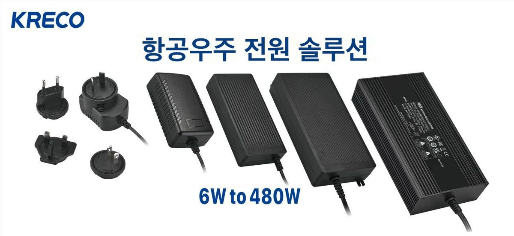
오차는 없다: 징룽 KRECO, 고신뢰 항공우주 전원 솔루션으로 아시아 우주전 참가2026-11-18징룽 KRECO는 저궤도 위성 인터넷 등 고신뢰 항공우주 전원에 집중해 항공우주, 의료, 산업 IoT, 상업 우주용 제품과 솔루션을 제공합니다. 11월 26~28일 참가합니다… 고교회 전력 오신(五新)전 참가사: 즈양 혁신, 디지털·지능화 전환과 스마트 점검 솔루션 공개2026-11-18즈양 혁신은 전력, 수리, 철도, 신에너지, 지질 안전 분야에 AI 솔루션을 제공합니다. 이번 전시에서 변전소 원격 스마트 순찰 시스템 등을 선보입니다…
고교회 전력 오신(五新)전 참가사: 즈양 혁신, 디지털·지능화 전환과 스마트 점검 솔루션 공개2026-11-18즈양 혁신은 전력, 수리, 철도, 신에너지, 지질 안전 분야에 AI 솔루션을 제공합니다. 이번 전시에서 변전소 원격 스마트 순찰 시스템 등을 선보입니다…
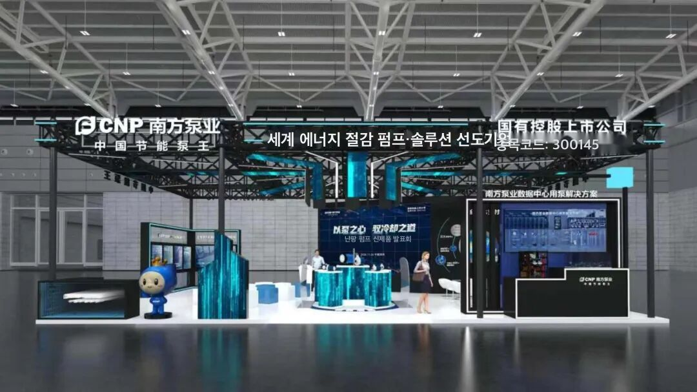
펌프의 마음으로 냉각을 이끌다: 난팡 펌프, 제28회 고교회 참가2026-11-18난팡 펌프는 데이터센터 액체냉각 분야에 집중합니다. 11월 26~28일 데이터센터 전 상황 펌프 솔루션과 액체냉각 CDU용 신제품을 아시아 AI 컴퓨팅·데이터센터전에서 선보입니다. 한국 시흥산업진흥원(SIDA), 한국 기업 10곳과 제28회 고교회 참가, 한중 협력 기회 모색2026-11-17시흥산업진흥원(SIDA)은 경기도 시흥시의 공공기관입니다. 엄선한 한국 기업 10곳과 한국관 형태로 제28회 고교회(CHTF 2026)에 참가하며, 부스는 10관에 있습니다…
한국 시흥산업진흥원(SIDA), 한국 기업 10곳과 제28회 고교회 참가, 한중 협력 기회 모색2026-11-17시흥산업진흥원(SIDA)은 경기도 시흥시의 공공기관입니다. 엄선한 한국 기업 10곳과 한국관 형태로 제28회 고교회(CHTF 2026)에 참가하며, 부스는 10관에 있습니다…
 과학기술 방패로 전역을 지키다: 중안스퉁, 일체형 저고도 방어 체계 공개2026-11-1711월 26~28일 톈진 중안스퉁이 광전 감지, 스마트 보안, 저고도 방어 핵심 제품과 솔루션을 선보입니다.
과학기술 방패로 전역을 지키다: 중안스퉁, 일체형 저고도 방어 체계 공개2026-11-1711월 26~28일 톈진 중안스퉁이 광전 감지, 스마트 보안, 저고도 방어 핵심 제품과 솔루션을 선보입니다.
 만물 지능 연결, 하모니 집결: 하모니OS 생태 서비스, 제28회 고교회에 초대합니다2026-11-16제28회 고교회가 11월 26~28일 열립니다. '국가 핵심장비' 구역의 중점 참가사인 하모니OS 생태 서비스(선전)가 하모니 생태 협력사들과 함께합니다…
만물 지능 연결, 하모니 집결: 하모니OS 생태 서비스, 제28회 고교회에 초대합니다2026-11-16제28회 고교회가 11월 26~28일 열립니다. '국가 핵심장비' 구역의 중점 참가사인 하모니OS 생태 서비스(선전)가 하모니 생태 협력사들과 함께합니다…
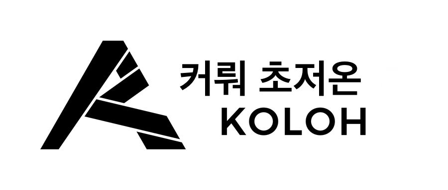
첫 공개: 커뤄 초저온의 자주 혁신 성과, 제28회 고교회에2026-11-14제28회 고교회에서 커뤄 초저온 특별 행사가 열립니다. 20K 이하 초저온 장비 전문기업 우시 커뤄(KOLOH)가 과학자 강연과 자주 혁신 성과를 선보입니다… 검사 24년 외길: 싼하이 테크, 주력 제품으로 제28회 고교회 참가2026-11-12항저우 싼하이 전자테크는 반도체, AI, 차량 전자, 녹색 에너지 분야의 테스트 제품과 시스템 통합 솔루션을 제공합니다. 11월 26~28일 전원 제품과 솔루션으로 참가합니다…
검사 24년 외길: 싼하이 테크, 주력 제품으로 제28회 고교회 참가2026-11-12항저우 싼하이 전자테크는 반도체, AI, 차량 전자, 녹색 에너지 분야의 테스트 제품과 시스템 통합 솔루션을 제공합니다. 11월 26~28일 전원 제품과 솔루션으로 참가합니다…
 바이오매스 가스화 에너지의 '숨은 챔피언': 중위 에너지 계열 바오제 테크 참가2026-11-12제28회 고교회가 11월 26~28일 선전 국제회의전시센터(바오안)에서 열립니다. 중위 에너지(03633.HK) 자회사 광둥 바오제 환경테크가 바이오매스 관련 성과를 선보입니다…
바이오매스 가스화 에너지의 '숨은 챔피언': 중위 에너지 계열 바오제 테크 참가2026-11-12제28회 고교회가 11월 26~28일 선전 국제회의전시센터(바오안)에서 열립니다. 중위 에너지(03633.HK) 자회사 광둥 바오제 환경테크가 바이오매스 관련 성과를 선보입니다…
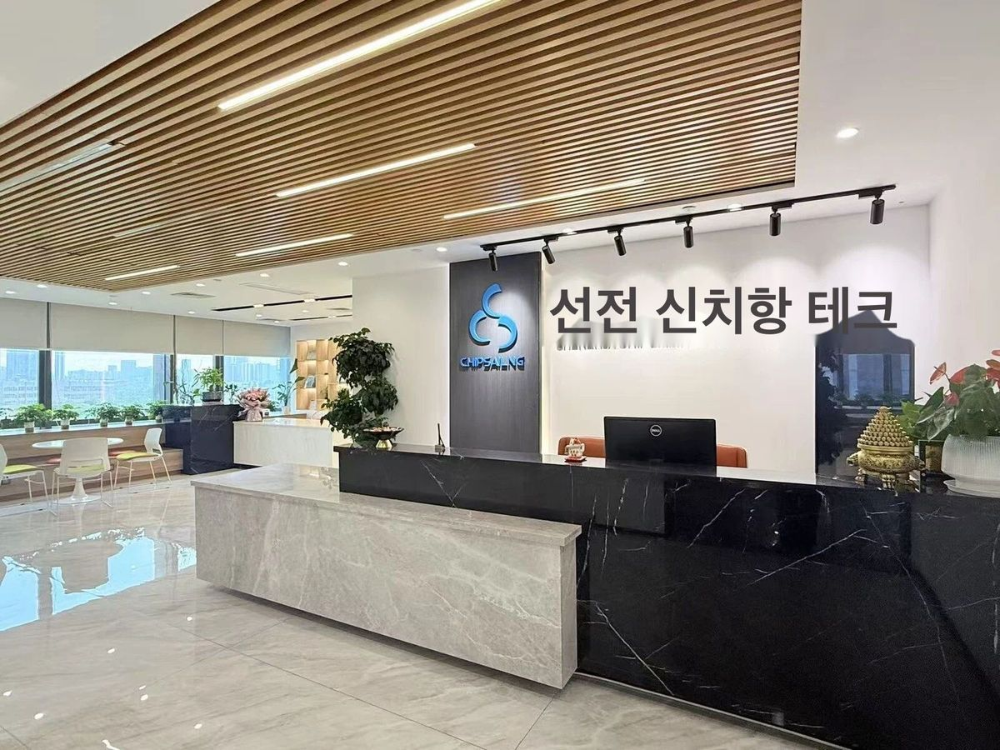
생체인식에서 인간-기계 상호작용까지: 신치항, 스마트 의료 제품으로 생명·건강전 참가2026-11-11선전 신치항 테크는 2015년 7월 7일 설립된 인간-기계 상호작용·생체인식 전문 첨단기술기업이자 국가급 전문화 '소거인' 기업입니다. Red Wind 팬 고교회 출격: 기술력으로 주목받는 정하오 테크2026-11-102017년 설립된 선전 정하오 테크는 냉각팬과 블로어 개발·제조 전문기업으로, DC 브러시리스 팬과 AC 팬 분야에서 축류팬, 와류팬, 블로어를 만듭니다…
Red Wind 팬 고교회 출격: 기술력으로 주목받는 정하오 테크2026-11-102017년 설립된 선전 정하오 테크는 냉각팬과 블로어 개발·제조 전문기업으로, DC 브러시리스 팬과 AC 팬 분야에서 축류팬, 와류팬, 블로어를 만듭니다…
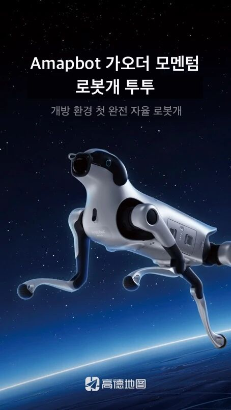
지도에서 로봇개로: 가오더 '투투', 제28회 고교회에 등장2026-11-10베이징 가오더 모멘텀 테크는 자체 ABot 풀스택 기술과 20년의 시공간 데이터를 바탕으로 실제 환경의 체화지능을 탐구합니다. 디지털 지도에서 공간 지능, 체화지능으로 나아갑니다… 352 고교회 참가: '가정 환경 전문가'가 지키는 깨끗한 집2026-11-09베이징 싼우얼(352) 환경테크는 기술 중심의 가정 환경 솔루션 기업으로 공기정화, 수처리, 습도 관리를 원스톱으로 제공합니다…
352 고교회 참가: '가정 환경 전문가'가 지키는 깨끗한 집2026-11-09베이징 싼우얼(352) 환경테크는 기술 중심의 가정 환경 솔루션 기업으로 공기정화, 수처리, 습도 관리를 원스톱으로 제공합니다…
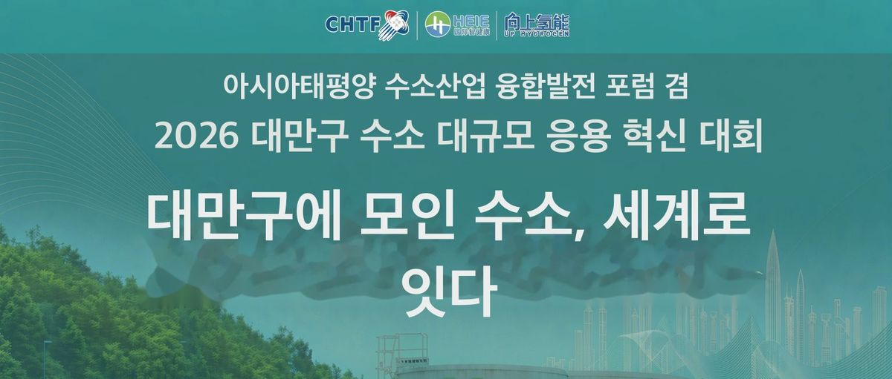
원사가 이끈다: 대만구 수소 대규모 응용 혁신 서밋 일정 전면 공개2026-11-07응용 현장은 어떻게 만들고 상용화는 어떻게 할까요? 저장·운송의 병목은 어떻게 풀까요? 11월 26~27일 아시아태평양 수소산업 융합발전 포럼 겸 2026 대만구 수소 서밋이 선전 국제회의전시센터에서 열립니다… 액체냉각으로 녹색 연산을 뒷받침: 판스하오하이, 제28회 고교회 참가2026-11-06판스하오하이는 데이터센터 액체냉각 열관리 전문기업으로 자주 혁신과 국산화를 앞세워 칩·서버 제조사와 데이터센터 운영사를 잇습니다. RDHx 액체냉각 리어도어 등을 공급합니다…
액체냉각으로 녹색 연산을 뒷받침: 판스하오하이, 제28회 고교회 참가2026-11-06판스하오하이는 데이터센터 액체냉각 열관리 전문기업으로 자주 혁신과 국산화를 앞세워 칩·서버 제조사와 데이터센터 운영사를 잇습니다. RDHx 액체냉각 리어도어 등을 공급합니다…
 금자탑광 고교회 참가: 중국 광치료로 세계 건강에 기여2026-11-05베이징 창잉광 의료테크는 광학·광의료 분야 22년 경력의 유연 웨어러블 광의료 선도기업입니다.
금자탑광 고교회 참가: 중국 광치료로 세계 건강에 기여2026-11-05베이징 창잉광 의료테크는 광학·광의료 분야 22년 경력의 유연 웨어러블 광의료 선도기업입니다.
 주목: 중국가스, 핵심 기술로 고교회 '신에너지' 구역 첫 참가2026-11-03중국가스는 중국 최대 지역 통합 에너지 공급·서비스 기업 중 하나로 2002년 설립돼 홍콩증시에 상장했습니다(00384.HK). 도시가스를 핵심으로 LNG, LPG 사업을 합니다…
주목: 중국가스, 핵심 기술로 고교회 '신에너지' 구역 첫 참가2026-11-03중국가스는 중국 최대 지역 통합 에너지 공급·서비스 기업 중 하나로 2002년 설립돼 홍콩증시에 상장했습니다(00384.HK). 도시가스를 핵심으로 LNG, LPG 사업을 합니다…
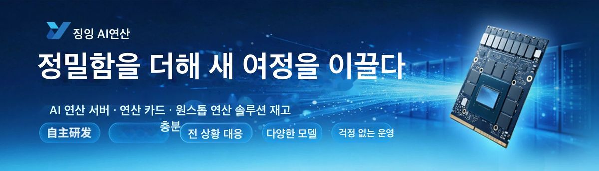
연산이 산업 현장을 견디게: 징잉 AI연산, 자체 MXM 산업용 그래픽카드와 솔루션 공개2026-11-02광둥 징잉 AI연산 테크가 제28회 고교회 아시아 AI 산업체인전(부스 C304)에 참가해 자체 개발 MXM 제품을 중점 전시합니다… 천년 청소 논리를 뒤집다: HIZERO, '무흡입' 생체모방 청소 기술 공개2026-10-31HIZERO R700은 세계 최초 무흡입 청소 로봇으로, 특허 고분자 롤러와 실시간 자가세정으로 늘 깨끗한 롤러로 바닥을 닦으며 찌든 때를 번지지 않게 제거합니다…
천년 청소 논리를 뒤집다: HIZERO, '무흡입' 생체모방 청소 기술 공개2026-10-31HIZERO R700은 세계 최초 무흡입 청소 로봇으로, 특허 고분자 롤러와 실시간 자가세정으로 늘 깨끗한 롤러로 바닥을 닦으며 찌든 때를 번지지 않게 제거합니다…
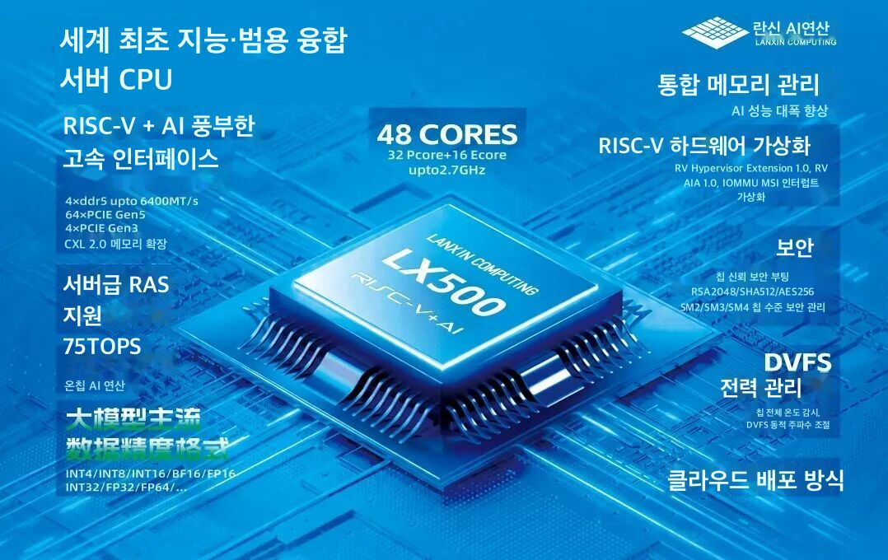
CPU에 AI 연산을 담다: 란신 AI연산, RISC-V+AI 제품으로 제28회 고교회 참가2026-10-29란신 AI연산(선전)이 RISC-V+AI 융합 CPU, 에이전트 일체기, 슈퍼노드 서버와 솔루션을 아시아 AI 산업체인전에서 선보입니다…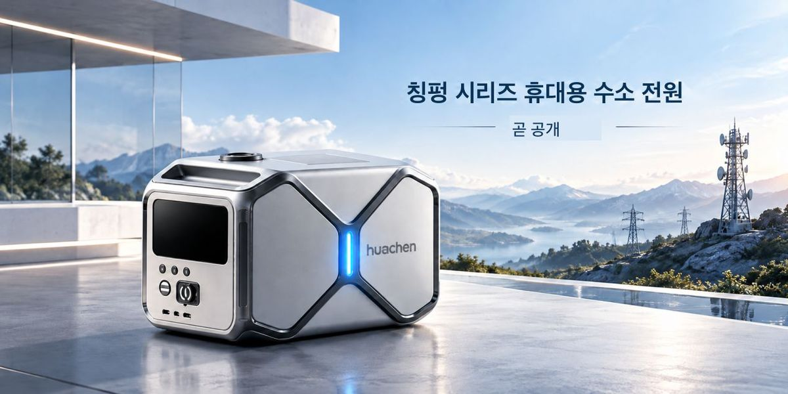
세계 최초: '칭펑' 시리즈 200W 휴대용 수소 발전 장비, 고교회 전력 오신전에서 공식 발표2026-10-28광둥 화천 수소에너지가 자체 개발한 '칭펑 시리즈 휴대용 수소 발전 장비'를 곧 공식 발표합니다. 시리즈 첫 제품인 세계 최초 200W 휴대용 수소 발전 장비는 제28회 고교회에서… 슈퍼커패시터 전 제품군과 AIDC·ESS 솔루션: 밍시 테크, 제28회 고교회 참가2026-10-23후이저우 밍시 테크는 광둥 후이저우에 있는 고에너지·고출력 슈퍼커패시터 연구개발·생산·판매 첨단기술기업입니다. 리튬이온, 코인형, 원통형 슈퍼커패시터 제품군을 갖췄습니다…
슈퍼커패시터 전 제품군과 AIDC·ESS 솔루션: 밍시 테크, 제28회 고교회 참가2026-10-23후이저우 밍시 테크는 광둥 후이저우에 있는 고에너지·고출력 슈퍼커패시터 연구개발·생산·판매 첨단기술기업입니다. 리튬이온, 코인형, 원통형 슈퍼커패시터 제품군을 갖췄습니다…
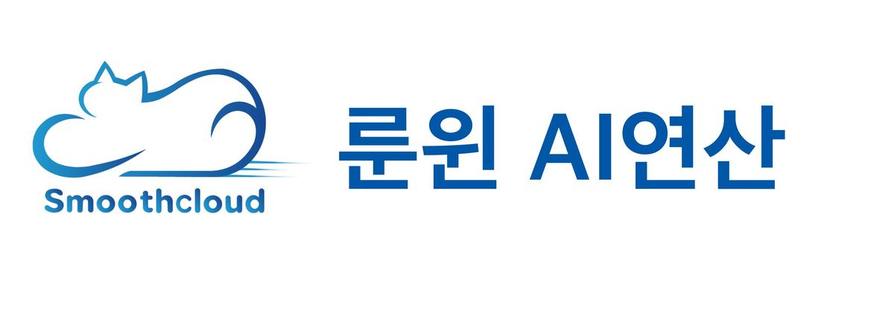
룬윈 AI연산, 고교회 참가: GPU 연산을 바탕으로 AI 응용을 실제로2026-10-22Smoothcloud 룬윈 AI연산은 GPU 연산 서비스와 AI 응용 구현에 집중합니다. 기업, 대학, 연구기관, 개발자에게 GPU 임대, 이기종 연산·풀링 서비스, 모델 학습, 추론 배포, AI 에이전트 개발 지원, 프라이빗 배포를 제공합니다… 연산 액체냉각에 집중: 카이줘리, 제28회 고교회 참가2026-10-21항저우 카이줘리 AI연산 클라우드는 연산 액체냉각 분야에 집중해 데이터센터와 AI 컴퓨팅센터에 고효율 액체냉각 캐비닛과 통합 냉각 솔루션을 제공합니다. 11월 26~28일 자체 개발한 연산 액체냉각 캐비닛으로…
연산 액체냉각에 집중: 카이줘리, 제28회 고교회 참가2026-10-21항저우 카이줘리 AI연산 클라우드는 연산 액체냉각 분야에 집중해 데이터센터와 AI 컴퓨팅센터에 고효율 액체냉각 캐비닛과 통합 냉각 솔루션을 제공합니다. 11월 26~28일 자체 개발한 연산 액체냉각 캐비닛으로…
 AI가 현실 세계를 알아듣고 실시간 소통하도록: 안페이웡 테크, 제28회 고교회 참가2026-10-212026년 11월 26~28일 안페이웡 테크가 AI 음성 제품과 솔루션으로 제28회 고교회 아시아 AI 산업체인전(부스 14-A205)에 참가해 상황 지능 음성 기술의 연구개발과 응용 성과를 선보입니다…
AI가 현실 세계를 알아듣고 실시간 소통하도록: 안페이웡 테크, 제28회 고교회 참가2026-10-212026년 11월 26~28일 안페이웡 테크가 AI 음성 제품과 솔루션으로 제28회 고교회 아시아 AI 산업체인전(부스 14-A205)에 참가해 상황 지능 음성 기술의 연구개발과 응용 성과를 선보입니다…
 신에너지 업계 스마트 제조 솔루션: 웨이얼화 전자, 고교회 AI 컴퓨팅·데이터센터전 참가2026-10-20선전 웨이얼화 전자는 신에너지 산업이 일어나던 2010년에 설립됐습니다. 10여 년간 꾸준히 역량을 쌓아 전액 출자 자회사 3곳 등을 거느린 그룹으로 성장했습니다…
신에너지 업계 스마트 제조 솔루션: 웨이얼화 전자, 고교회 AI 컴퓨팅·데이터센터전 참가2026-10-20선전 웨이얼화 전자는 신에너지 산업이 일어나던 2010년에 설립됐습니다. 10여 년간 꾸준히 역량을 쌓아 전액 출자 자회사 3곳 등을 거느린 그룹으로 성장했습니다…
 기존 로봇이 닿지 못하는 곳까지: 난징 셴콩 로봇, 제28회 고교회 아시아 로봇 산업체인전 참가2026-10-20난징 셴콩 로봇(이하 셴콩 테크)은 케이블 구동 로봇 CablebotX를 핵심 제품으로, 기존 자동화가 다루기 어려운 산업 작업에 집중해 넓은 공간과 고하중 작업의 로봇화를 탐구합니다. 11월 26~28일…
기존 로봇이 닿지 못하는 곳까지: 난징 셴콩 로봇, 제28회 고교회 아시아 로봇 산업체인전 참가2026-10-20난징 셴콩 로봇(이하 셴콩 테크)은 케이블 구동 로봇 CablebotX를 핵심 제품으로, 기존 자동화가 다루기 어려운 산업 작업에 집중해 넓은 공간과 고하중 작업의 로봇화를 탐구합니다. 11월 26~28일…
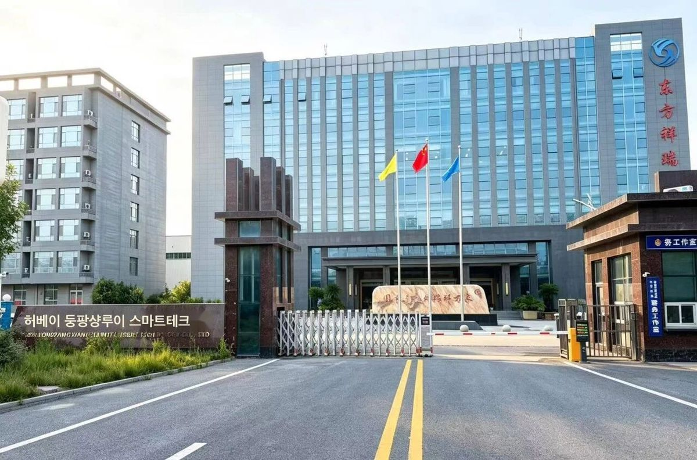
ESS·연산 통신 부대 장비 전문: 둥팡샹루이, 고교회 AI 컴퓨팅·데이터센터전 참가2026-10-19허베이 둥팡샹루이 스마트테크는 허베이성 런추시 경제개발구의 첨단기술기업으로 납입자본금은 1억 99만 위안입니다. 본사 부지는 11.5만㎡(약 200무)이며 자체 스마트 IoT 단지를 갖췄습니다… 정밀 씰링·탄성 부품 솔루션: 쑤저우 민숴, 고교회 AI 컴퓨팅·데이터센터전 참가2026-10-16쑤저우 민숴 신소재는 데이터센터 액체냉각과 AI 연산 장비용 고성능 씰과 정밀 스프링을 연구·제조하며, 제품은 AI 연산과 액체냉각 업계의 각종 장비에 맞춰 설계됩니다. 11월 26~28일…
정밀 씰링·탄성 부품 솔루션: 쑤저우 민숴, 고교회 AI 컴퓨팅·데이터센터전 참가2026-10-16쑤저우 민숴 신소재는 데이터센터 액체냉각과 AI 연산 장비용 고성능 씰과 정밀 스프링을 연구·제조하며, 제품은 AI 연산과 액체냉각 업계의 각종 장비에 맞춰 설계됩니다. 11월 26~28일…
 열전달·냉각에 집중: 안메이 테크, 데이터센터 침지 냉각액 솔루션으로 고교회 참가2026-10-16안메이 테크는 열전달과 냉각 분야에 집중해 데이터센터 냉각액 기술 혁신을 이어 갑니다. -100℃부터 400℃까지 알맞은 열매체와 냉각액을 공급해 정밀한 열관리를 돕습니다. 11월 26~28일…
열전달·냉각에 집중: 안메이 테크, 데이터센터 침지 냉각액 솔루션으로 고교회 참가2026-10-16안메이 테크는 열전달과 냉각 분야에 집중해 데이터센터 냉각액 기술 혁신을 이어 갑니다. -100℃부터 400℃까지 알맞은 열매체와 냉각액을 공급해 정밀한 열관리를 돕습니다. 11월 26~28일…
 롤투롤 고성능 그래핀 열전도 필름 제조사: 다오밍 광학, 고교회 AI 컴퓨팅·데이터센터전 참가2026-10-14다오밍 광학은 2002년 6월 설립돼 2011년 선전증권거래소에 상장한 중국 반사 소재 업계 상장사로 신소재 연구와 생산에 힘쓰고 있습니다. 20여 년의 성장으로 부지는 1,300무를 넘습니다…
롤투롤 고성능 그래핀 열전도 필름 제조사: 다오밍 광학, 고교회 AI 컴퓨팅·데이터센터전 참가2026-10-14다오밍 광학은 2002년 6월 설립돼 2011년 선전증권거래소에 상장한 중국 반사 소재 업계 상장사로 신소재 연구와 생산에 힘쓰고 있습니다. 20여 년의 성장으로 부지는 1,300무를 넘습니다…
 로봇을 가정으로: 눠인 스마트, 접이식 양팔 로봇 Knowin-X1으로 제28회 고교회 아시아 로봇 산업체인전 참가2026-10-142026년 11월 26~28일 선전 눠인 스마트가 접이식 양팔 로봇 Knowin-X1을 제28회 고교회 아시아 로봇 산업체인전(부스 12-B17)에 선보입니다. 소비자 가정용 체화지능 제품과 기술을 보여 줍니다…
고성능·고신뢰 전문 서버 플랫폼: 화난진파이, 고교회 참가2026-10-12선전 화난싼셴 테크는 2008년 설립된 첨단기술기업으로 AI 에이전트 하드웨어 솔루션의 연구개발, 생산, 판매, 서비스를 합니다.
로봇을 가정으로: 눠인 스마트, 접이식 양팔 로봇 Knowin-X1으로 제28회 고교회 아시아 로봇 산업체인전 참가2026-10-142026년 11월 26~28일 선전 눠인 스마트가 접이식 양팔 로봇 Knowin-X1을 제28회 고교회 아시아 로봇 산업체인전(부스 12-B17)에 선보입니다. 소비자 가정용 체화지능 제품과 기술을 보여 줍니다…
고성능·고신뢰 전문 서버 플랫폼: 화난진파이, 고교회 참가2026-10-12선전 화난싼셴 테크는 2008년 설립된 첨단기술기업으로 AI 에이전트 하드웨어 솔루션의 연구개발, 생산, 판매, 서비스를 합니다.
 해외 기술 봉쇄를 넘다: 커뤄 초저온, 100% 국산화 초저온 장비로 고교회 참가2026-09-282026년 11월 26~28일 커뤄 초저온이 제28회 고교회 HEIE 아시아 수소전에 참가해 수소·헬륨 액화 설비 전 계열과 핵심 부품으로 20K 이하 초저온 장비 기술을 선보입니다…
해외 기술 봉쇄를 넘다: 커뤄 초저온, 100% 국산화 초저온 장비로 고교회 참가2026-09-282026년 11월 26~28일 커뤄 초저온이 제28회 고교회 HEIE 아시아 수소전에 참가해 수소·헬륨 액화 설비 전 계열과 핵심 부품으로 20K 이하 초저온 장비 기술을 선보입니다…
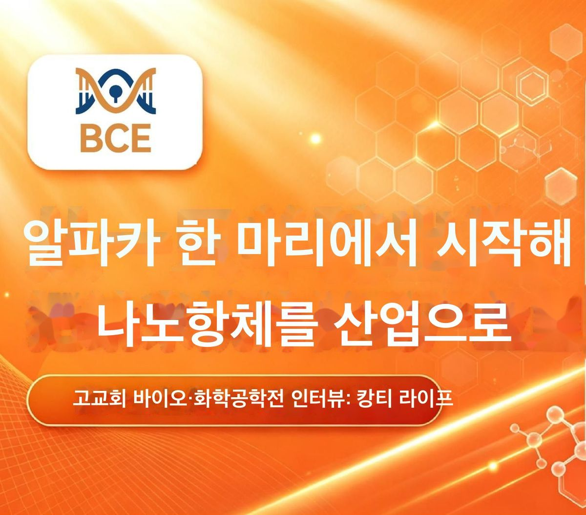
고교회 바이오·화학공학전 인터뷰, 캉티 라이프: 알파카 한 마리에서 시작해 나노항체를 산업으로2026-09-142016년 설립된 회사로 국가급 고급 인재가 이끌고, 생물학 박사 여러 명이 핵심 기술팀을 이룹니다. 나노항체 발굴 플랫폼(파지 디스플레이, 효모 디스플레이)과 단백질 발현·정제 플랫폼(대장균, 효모 등)을 갖췄습니다…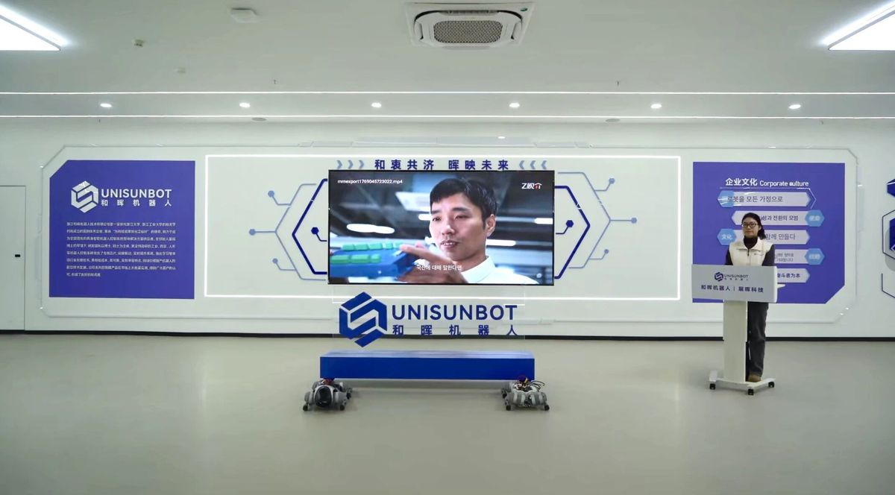
체화 로봇의 '운동 비밀'을 풀다: 허후이 로봇, 제28회 고교회 아시아 AI 산업체인전 참가2026-09-08허후이 로봇은 저장대와 저장공업대의 관련 학과를 바탕으로 세운 첨단기술기업으로 창업자 둥후이 교수가 핵심 팀을 이끌며 연구진은 석·박사 중심입니다. 체화지능 로봇 제어에 집중합니다… 세계 연산 자원을 모으다: AlphaPlus, 풀스택 서비스로 고교회 아시아 AI 산업체인전 참가2026-08-172026년 11월 26~28일 AlphaPlus가 제28회 고교회에 참가해 NVIDIA DGX B300, DGX Spark, PRO 6000 SE, RTX 5090 등 고성능 GPU와 서버용 CPU, SSD, HDD, 고성능 메모리를 선보입니다…
세계 연산 자원을 모으다: AlphaPlus, 풀스택 서비스로 고교회 아시아 AI 산업체인전 참가2026-08-172026년 11월 26~28일 AlphaPlus가 제28회 고교회에 참가해 NVIDIA DGX B300, DGX Spark, PRO 6000 SE, RTX 5090 등 고성능 GPU와 서버용 CPU, SSD, HDD, 고성능 메모리를 선보입니다…
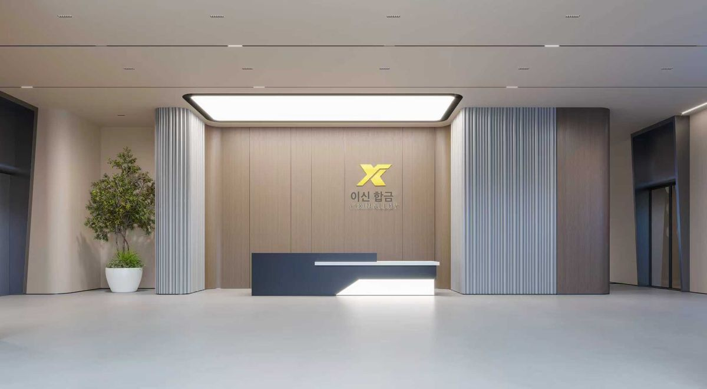
단양 이신 합금 × 고교회 아시아 신소재전: 고급 니켈 합금 '스마트 제조 전문가'2026-07-15단양 이신 합금은 진공유도 제련과 고온합금, 고니켈 합금, 니켈기 합금 용접재, 내식 합금, 인코넬, 모넬(Monel Alloy), 니모닉(Nimonic Alloy), 하스텔로이(Hastelloy Alloy), 정밀 합금의 연구개발·생산·판매 기업입니다… 참가사 소개: 징둔 신소재의 고순도 육방정 질화붕소2026-07-14부스 16-H3. 신에너지, 반도체, 항공우주 산업이 빠르게 성장하며 고성능 소재가 필수가 됐습니다. 징둔 신소재(허난)는 고순도 육방정 질화붕소 전문 기업입니다…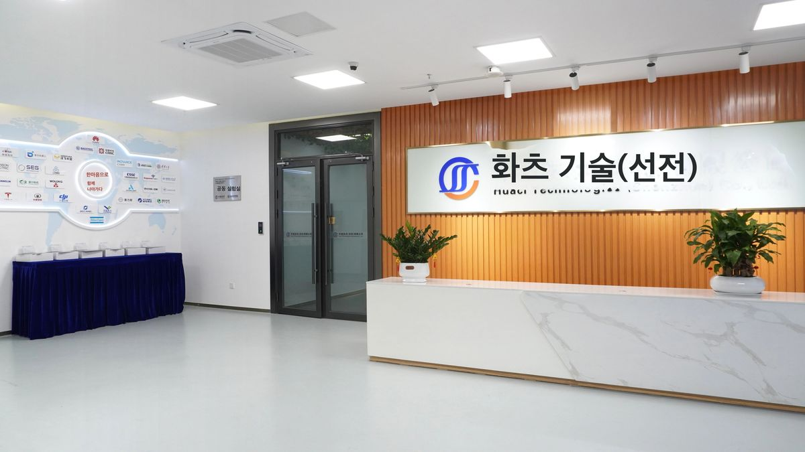
'자기 코어'에서 '스마트 코어'로: 화츠 기술, 고교회 아시아 로봇 산업체인전 참가2026-06-24화츠 기술(선전)은 고급 연자성 소재와 고성능 자가접착 철심 제조 전문기업으로 항공우주, 저고도 비행체, 로봇, 자기부상 고속 모터, 수소 연료전지 공기압축기 분야에 시뮬레이션부터…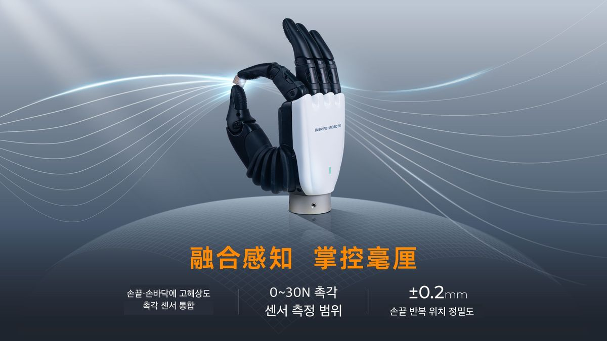
로봇의 '마지막 1cm' 문제를 풀다: 인스파이어 로봇, 고교회 아시아 로봇 산업체인전 참가2026-06-12중국 미세 정밀 운동제어 분야의 대표 기업 인스파이어 로봇이 여러 핵심 제품으로 제28회 고교회에 참가합니다. 창춘 웨이제 광학, 고교회 참가: 국산 고급 현미경으로 생명과학 최전선 지원2026-05-06창춘 웨이제 광학은 중국의 고급 현미경 핵심 공급사로 고급 광학현미경, 광학 모듈, 시약을 연구·생산하며 가성비 높은 국산 고급 현미경 장비로 여러 분야의 첨단 연구를 돕습니다.
창춘 웨이제 광학, 고교회 참가: 국산 고급 현미경으로 생명과학 최전선 지원2026-05-06창춘 웨이제 광학은 중국의 고급 현미경 핵심 공급사로 고급 광학현미경, 광학 모듈, 시약을 연구·생산하며 가성비 높은 국산 고급 현미경 장비로 여러 분야의 첨단 연구를 돕습니다.